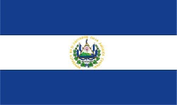

About Me
My name is Yancy Rodriguez. I from El Salvador, I'm 34 years. I live in the city of San Salvador. I am currently working as a Recruitment Analyst at TELUS International. I got married in 2021, and I'm serving as 1st Counselor of the Relief Society in my ward. I currently taking the Bachelor's Degree in Software Development at BYU-Idaho. I love spend time with my husband and I like to play soccer.
San Salvador, El Salvador
El Salvador is the smallest and most densely populated of Central America. The current flag of El Salvador was initially adopted in 1912. It features three horizontal stripes, two of which are a deep but vibrant cobalt blue and one of which is white. The upper blue stripe represents the sky, while the lower blue stripe stands for the ocean. The central white stripe represents peace.